Ch15-HBase 之 Put
April 15, 2021
HBase Put
1. Put 涉及到的模块说明 #
HBase 采用 LSM 树架构，天生适用于写多读少的应用场景。在真实生产线环境中，也正是因为 HBase 集群出色的写入能力，才能支持当下很多数据激增的业务。需要说明的是，HBase 服务端并没有提供 update、delete 接口，HBase 中对数据的更新、删除操作在服务器端也认为是写入操作，不同的是，更新操作会写入一个最新版本数据，删除操作会写入一条标记为 deleted 的 KV 数据。所以 HBase 中更新、删除操作的流程与写入流程完全一致。当然，HBase 数据写入的整个流程随着版本的迭代在不断优化，但总体流程变化不大。
写入流程的三个阶段
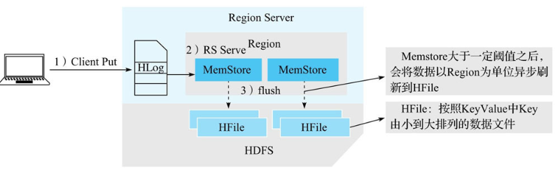
从整体架构的视角来看，写入流程可以概括为三个阶段。
- 客户端处理阶段：客户端将用户的写入请求进行预处理，并根据集群元数据定位写入数据所在的 RegionServer，将请求发送给对应的 RegionServer。
- Region 写入阶段：RegionServer 接收到写入请求之后将数据解析出来，首先写入 WAL，再写入对应 Region 列簇的 MemStore。
- MemStore Flush 阶段：当 Region 中 MemStore 容量超过一定阈值，系统会异步执行 flush 操作，将内存中的数据写入文件，形成 HFile。
用户写入请求在完成 Region MemStore 的写入之后就会返回成功。MemStoreFlush 是一个异步执行的过程。
2 HBase Client 的流程 #
2.1 基本流程 #
HBase 客户端处理写入请求的核心流程基本上可以概括为三步。
- 用户提交 put 请求后，HBase 客户端会将写入的数据添加到本地缓冲区中，符合一定条件就会通过 AsyncProcess 异步批量提交。HBase 默认设置 autoflush=true，表示 put 请求直接会提交给服务器进行处理；用户可以设置 autoflush=false，这样，put 请求会首先放到本地缓冲区，等到本地缓冲区大小超过一定阈值（默认为 2M，可以通过配置文件配置）之后才会提交。很显然，后者使用批量提交请求，可以极大地提升写入吞吐量，但是因为没有保护机制，如果客户端崩溃，会导致部分已经提交的数据丢失。
- 在提交之前，HBase 会在元数据表 hbase:meta 中根据 rowkey 找到它们归属的 RegionServer，这个定位的过程是通过 HConnection 的 locateRegion 方法 (下图中的 getRegionLocation 方法最终调用到的方法) 完成的。如果是批量请求，还会把这些 rowkey 按照 HRegionLocation 分组，不同分组的请求意味着发送到不同的 RegionServer，因此每个分组对应一次 RPC 请求。
- HBase 会为每个 HRegionLocation 构造一个远程 RPC 请求 MultiServerCallable，并通过 rpcCallerFactory.newCaller() 执行调用。将请求经过 Protobuf 序列化后发送给对应的 RegionServer。
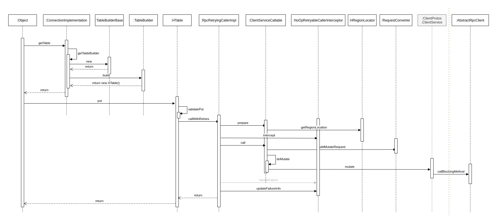
2.2 备注 #
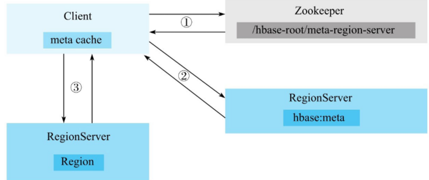
图中的 meta cache 基于 CopyOnWriteArrayMap 实现。
- 客户端根据写入的表以及 rowkey 在元数据缓存中查找，如果能够查找出该 rowkey 所在的 RegionServer 以及 Region，就可以直接发送写入请求（携带 Region 信息）到目标 RegionServer。
- 如果客户端缓存中没有查到对应的 rowkey 信息，需要首先到 ZooKeeper 上 /hbase/meta-region-server 节点查找 HBase 元数据表所在的 RegionServer。向 hbase:meta 所在的 RegionServer 发送查询请求，在元数据表中查找 rowkey 所在的 RegionServer 以及 Region 信息。客户端接收到返回结果之后会将结果缓存到本地，以备下次使用。
- 客户端根据 rowkey 相关元数据信息将写入请求发送给目标 RegionServer，RegionServer 接收到请求之后会解析出具体的 Region 信息，查到对应的 Region 对象，并将数据写入目标 Region 的 MemStore 中。
3. HBase Master 的流程 #
4. HBase RegionServer 的流程 #
数据写入 Region 的流程可以抽象为两步：追加写入 HLog，随机写入 MemStore
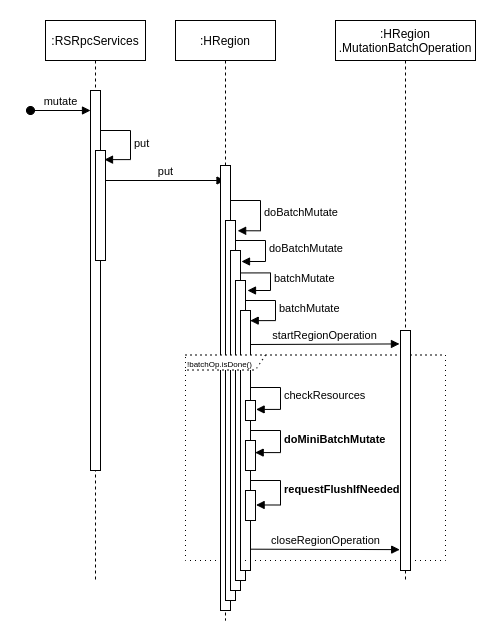
4.1 HLog 追加写入 #
HLog 保证成功写入 MemStore 中的数据不会因为进程异常退出或者机器宕机而丢失，但实际上并不完全如此，HBase 定义了多个 HLog 持久化等级，使得用户在数据高可靠和写入性能之间进行权衡。
4.1.1 HLog 持久化等级 #
HBase 可以通过设置 HLog 的持久化等级决定是否开启 HLog 机制以及 HLog 的落盘方式。HLog 的持久化等级分为如下五个等级。
| 等级 | 说明 |
|---|---|
| SKIP_WAL | 只写缓存，不写 HLog 日志。因为只写内存，因此这种方式可以极大地提升写入性能，但是数据有丢失的风险。在实际应用过程中并不建议设置此等级，除非确认不要求数据的可靠性。 |
| SYNC_WAL | 同步将数据写入日志文件中，需要注意的是，数据只是被写入文件系统中，并没有真正落盘。HDFS Flush 策略详见 HADOOP-6313。 |
| FSYNC_WAL | 同步将数据写入日志文件并强制落盘。这是最严格的日志写入等级，可以保证数据不会丢失，但是性能相对比较差。 |
| USER_DEFAULT | 如果用户没有指定持久化等级，默认 HBase 使用 SYNC_WAL 等级持久化数据。 |
put.setDurability(Durability.SYNC_WAL);
4.1.2 HLog 写入模型 #
在 HBase 的演进过程中，HLog 的写入模型几经改进，写入吞吐量得到极大提升。之前的版本中，HLog 写入都需要经过三个阶段：首先将数据写入本地缓存，然后将本地缓存写入文件系统，最后执行 sync 操作同步到磁盘。
很显然，三个阶段是可以流水线工作的，基于这样的设想，写入模型自然就想到“生产者 - 消费者”队列实现。然而之前版本中，生产者之间、消费者之间以及生产者与消费者之间的线程同步都是由 HBase 系统实现，使用了大量的锁，在写入并发量非常大的情况下会频繁出现恶性抢占锁的问题，写入性能较差。
当前版本中，HBase 使用 LMAX Disruptor 框架实现了无锁有界队列操作。基于 Disruptor 的 HLog 写入模型如图所示。
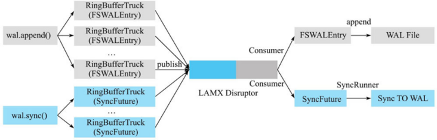
图中最左侧部分是 Region 处理 HLog 写入的两个前后操作：append 和 sync。当调用 append 后，WALEdit 和 HLogKey 会被封装成 FSWALEntry 类，进而再封装成 RingBufferTruck 类放入 Disruptor 无锁有界队列中。当调用 sync 后，会生成一个 SyncFuture，再封装成 RingBufferTruck 类放入同一个队列中，然后工作线程会被阻塞，等待 notify() 来唤醒。
图最右侧部分是消费者线程，在 Disruptor 框架中有且仅有一个消费者线程工作。这个框架会从 Disruptor 队列中依次取出 RingBufferTruck 对象，然后根据如下选项来操作：
- 如果 RingBufferTruck 对象中封装的是 FSWALEntry，就会执行文件 append 操作，将记录追加写入 HDFS 文件中。需要注意的是，此时数据有可能并没有实际落盘，而只是写入到文件缓存。
- 如果 RingBufferTruck 对象是 SyncFuture，会调用线程池的线程异步地批量刷盘，刷盘成功之后唤醒工作线程完成 HLog 的 sync 操作。
4.2 Region 写入阶段 #
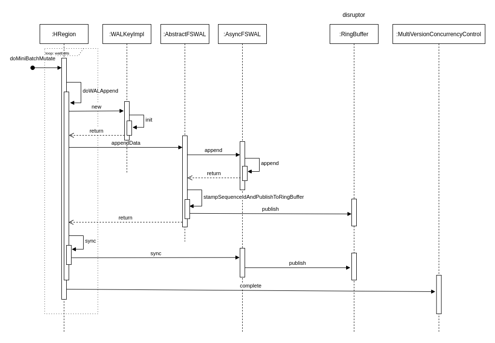
服务器端 RegionServer 接收到客户端的写入请求后，首先会反序列化为 put 对象，然后执行各种检查操作，比如检查 Region 是否是只读、MemStore 大小是否超过 blockingMemstoreSize 等。检查完成之后，执行一系列核心操作
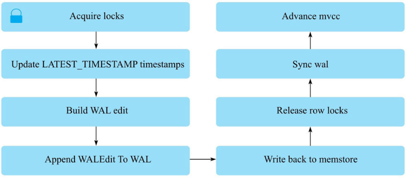
- Acquire locks：HBase 中使用行锁保证对同一行数据的更新都是互斥操作，用以保证更新的原子性，要么更新成功，要么更新失败。
- Update LATEST_TIMESTAMP timestamps：更新所有待写入（更新）KeyValue 的时间戳为当前系统时间。
- Build WAL edit：HBase 使用 WAL 机制保证数据可靠性，即首先写日志再写缓存，即使发生宕机，也可以通过恢复 HLog 还原出原始数据。该步骤就是在内存中构建 WALEdit 对象，为了保证 Region 级别事务的写入原子性，一次写入操作中所有 KeyValue 会构建成一条 WALEdit 记录。
- Append WALEdit To WAL：将步骤 3 中构造在内存中的 WALEdit 记录顺序写入 HLog 中，此时不需要执行 sync 操作。当前版本的 HBase 使用了 disruptor 实现了高效的生产者消费者队列，来实现 WAL 的追加写入操作。
- Write back to MemStore：写入 WAL 之后再将数据写入 MemStore。
- Release row locks：释放行锁。
- Sync wal：HLog 真正 sync 到 HDFS，在释放行锁之后执行 sync 操作是为了尽量减少持锁时间，提升写性能。如果 sync 失败，执行回滚操作将 MemStore 中已经写入的数据移除。
- 结束写事务：此时该线程的更新操作才会对其他读请求可见，更新才实际生效。
4.3 MemStore Flush 阶段 #
4.3.1 触发条件 #
见HBase Cache 介绍，这里不再重复说明。
4.3.2 执行流程 #
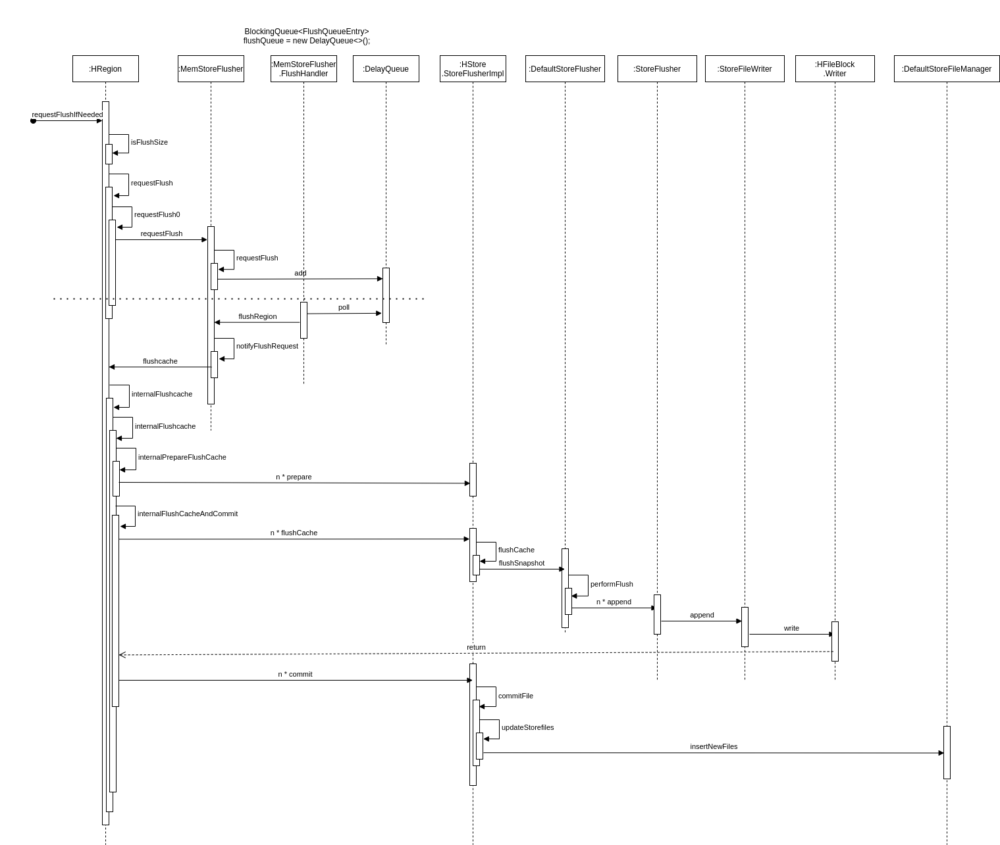
为了减少 flush 过程对读写的影响，HBase 采用了类似于两阶段提交的方式，将整个 flush 过程分为三个阶段。
| 阶段 | 说明 |
|---|---|
| prepare | 遍历当前 Region 中的所有 MemStore，将 MemStore 中当前数据集 CellSkipListSet（内部实现采用 ConcurrentSkipListMap）做一个快照 snapshot，然后再新建一个 CellSkipListSet 接收新的数据写入。prepare 阶段需要添加 updateLock 对写请求阻塞，结束之后会释放该锁。因为此阶段没有任何费时操作，因此持锁时间很短。 |
| flush | 遍历所有 MemStore，将 prepare 阶段生成的 snapshot 持久化为临时文件，临时文件会统一放到目录.tmp 下。这个过程因为涉及磁盘 IO 操作，因此相对比较耗时。 |
| commit | 遍历所有的 MemStore，将 flush 阶段生成的临时文件移到指定的 ColumnFamily 目录下，针对 HFile 生成对应的 storefile 和 Reader，把 storefile 添加到 Store 的 storef iles 列表中，最后再清空 prepare 阶段生成的 snapshot。 |
4.4 生成 HFile #
HFile 的数据结构见HBase HFile 介绍，这里不再重复说明。
MemStore 中 KV 在 flush 成 HFile 时首先构建 Scanned Block 部分，即 KV 写进来之后先构建 Data Block 并依次写入文件，在形成 Data Block 的过程中也会依次构建形成 Leaf index Block、Bloom Block 并依次写入文件。一旦 MemStore 中所有 KV 都写入完成，Scanned Block 部分就构建完成。 Non-scanned Block、Load-on-open 以及 Trailer 这三部分是在所有 KV 数据完成写入后再追加写入的。
4.4.1 Scanned Block 构建 #
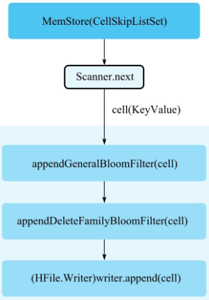
- MemStore 执行 flush，首先新建一个 Scanner，这个 Scanner 从存储 KV 数据的 CellSkipListSet 中依次从小到大读出每个 cell（KeyValue）。这里必须注意读取的顺序性，读取的顺序性保证了 HFile 文件中数据存储的顺序性，同时读取的顺序性是保证 HFile 索引构建以及布隆过滤器 Meta Block 构建的前提。
- appendGeneralBloomFilter：在内存中使用布隆过滤器算法构建 BloomBlock，下文也称为 Bloom Chunk。
- appendDeleteFamilyBloomFilter：针对标记为"DeleteFamily"或者"DeleteFamilyVersion"的 cell，在内存中使用布隆过滤器算法构建 BloomBlock，基本流程和 appendGeneralBloomFilter 相同。
- (HFile.Writer)writer.append：将 cell 写入 Data Block 中，这是 HFile 文件构建的核心。
4.4.2 Bloom Block 构建 #
图为 Bloom Block 构建示意图，实际实现中使用 chunk 表示 Block 概念，两者等价。
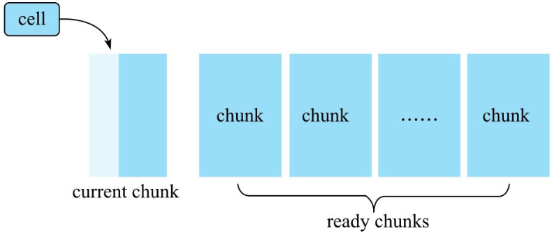
布隆过滤器内存中维护了多个称为 chunk 的数据结构，一个 chunk 主要由两个元素组成：
一块连续的内存区域，主要存储一个特定长度的数组。默认数组中所有位都为 0，对于 row 类型的布隆过滤器，cell 进来之后会对其 rowkey 执行 hash 映射，将其映射到位数组的某一位，该位的值修改为 1。 firstkey，第一个写入该 chunk 的 cell 的 rowkey，用来构建 Bloom IndexBlock。 cell 写进来之后，首先判断当前 chunk 是否已经写满，写满的标准是这个 chunk 容纳的 cell 个数是否超过阈值。如果超过阈值，就会重新申请一个新的 chunk，并将当前 chunk 放入 ready chunks 集合中。如果没有写满，则根据布隆过滤器算法使用多个 hash 函数分别对 cell 的 rowkey 进行映射，并将相应的位数组位置为 1。
4.4.3 Data Block 构建 #
一个 cell 在内存中生成对应的布隆过滤器信息之后就会写入 Data Block，写入过程分为两步。
- Encoding KeyValue：使用特定的编码对 cell 进行编码处理，HBase 中主要的编码器有 DiffKeyDeltaEncoder、FastDiffDeltaEncoder 以及 PrefixKeyDeltaEncoder 等。编码的基本思路是，根据上一个 KeyValue 和当前 KeyValue 比较之后取 delta，展开讲就是 rowkey、column family 以及 column 分别进行比较然后取 delta。假如前后两个 KeyValue 的 rowkey 相同，当前 rowkey 就可以使用特定的一个 f lag 标记，不需要再完整地存储整个 rowkey。这样，在某些场景下可以极大地减少存储空间。
- 将编码后的 KeyValue 写入 DataOutputStream。
随着 cell 的不断写入，当前 Data Block 会因为大小超过阈值（默认 64KB）而写满。写满后 Data Block 会将 DataOutputStream 的数据 f lush 到文件，该 Data Block 此时完成落盘。
4.4.4 Leaf Index Block 构建 #
Data Block 完成落盘之后会立刻在内存中构建一个 Leaf Index Entry 对象，并将该对象加入到当前 Leaf Index Block。Leaf Index Entry 对象有三个重要的字段。
- firstKey：落盘 Data Block 的第一个 key。用来作为索引节点的实际内容，在索引树执行索引查找的时候使用。
- blockOffset：落盘 Data Block 在 HFile 文件中的偏移量。用于索引目标确定后快速定位目标 Data Block。
- blockDataSize：落盘 Data Block 的大小。用于定位到 Data Block 之后的数据加载。
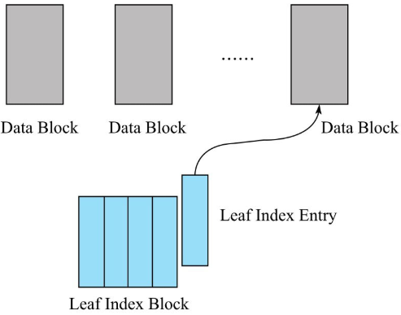
Leaf Index Block 会随着 Leaf Index Entry 的不断写入慢慢变大，一旦大小超过阈值（默认 64KB），就需要 f lush 到文件执行落盘。需要注意的是，LeafIndex Block 落盘是追加写入文件的，所以就会形成 HFile 中 Data Block、LeafIndex Block 交叉出现的情况。
和 Data Block 落盘流程一样，Leaf Index Block 落盘之后还需要再往上构建 RootIndex Entry 并写入 Root Index Block，形成索引树的根节点。但是根节点并没有追加写入"Scanned block"部分，而是在最后写入"Load-on-open"部分。
可以看出，HFile 文件中索引树的构建是由低向上发展的，先生成 Data Block，再生成 Leaf Index Block，最后生成 Root Index Block。而检索 rowkey 时刚好相反，先在 Root Index Block 中查询定位到某个 Leaf Index Block，再在 Leaf IndexBlock 中二分查找定位到某个 Data Block，最后将 Data Block 加载到内存进行遍历查找。
4.4.5 Bloom Block Index 构建 #
完成 Data Block 落盘还有一件非常重要的事情：检查是否有已经写满的 BloomBlock。如果有，将该 Bloom Block 追加写入文件，在内存中构建一个 BloomIndex Entry 并写入 Bloom Index Block。
整个流程与 Data Block 落盘后构建 Leaf Index Entry 并写入 Leaf Index Block 的流程完全一样。在此不再赘述。
4.5 流程总结 #
flush 阶段生成 HFile 和 Compaction 阶段生成 HFile 的流程完全相同，不同的是，flush 读取的是 MemStore 中的 KeyValue 写成 HFile，而 Compaction 读取的是多个 HFile 中的 KeyValue 写成一个大的 HFile，KeyValue 来源不同。KeyValue 数据生成 HFile，首先会构建 Bloom Block 以及 Data Block，一旦写满一个 Data Block 就会将其落盘同时构造一个 Leaf Index Entry，写入 LeafIndex Block，直至 Leaf Index Block 写满落盘。实际上，每写入一个 KeyValue 就会动态地去构建"Scanned Block"部分，等所有的 KeyValue 都写入完成之后再静态地构建"Non-scanned Block"部分、“Load on open"部分以及"Trailer"部分。